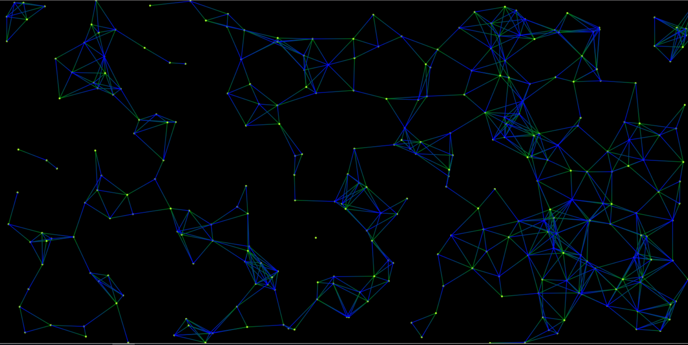

先看一看效果：

先分析粒子连线的实现步骤：
1.初始化一张画布
2.创建粒子
1）创建粒子即在画布上画一个个小圆
2）初始化粒子的属性：数量：num 300；半径：3；圆形为随机排列且满足：x:0<x<浏览器的宽度；y:0<y<浏览器的高度；
3.粒子运动
这里要理解粒子运动的本质并不是粒子在运动，而是不断地重新绘画粒子，擦除之前的粒子；
4.粒子连线
1）是否构成连线的条件
2）构成条件的粒子之间连接成线
（接下来说一下一些步骤的实现，没按标准格式，文末有源码！）
先初始化一张画布
1 <canvas id="canvas"></canvas>
设置一下样式
1 body{
2 margin:0;
3 }
4 #canvas{
5 display: block;
6 background-color: black;
7 }具体的画布大小我们在js代码中实现
1 var cxt=document.getElementById("canvas").getContext('2d');//创建画笔
2 var canvas=document.getElementById("canvas");
3 canvas.width=window.innerWidth;//设置画布宽高
4 canvas.height=window.innerHeight;粒子的属性
1 var num=300;
2 var data=[];//储存粒子的属性数据
3 function init(){
4 for(var i=0;i<num;i++){
5 data[i]={
6 x1: Math.random() * window.innerWidth,//随机的粒子圆心坐标
7 y1: Math.random() * window.innerHeight,
8 sX: Math.random() * 0.6 - 0.3,//取值范围0.3-0.3，是粒子运动的偏移量
9 sY: Math.random() * 0.6 - 0.3
10 };
11 createArc(data[i].x1,data[i].y1);//调用创建粒子的函数
12 }
13 }
14 init(); 创建粒子的函数
1 function createArc(x,y){
2 cxt.save();
3 cxt.beginPath();
4 cxt.fillStyle='greenyellow';//粒子的颜色
5 cxt.arc(x,y,2,0,Math.PI*2,false);
6 cxt.closePath();
7 cxt.fill();
8 cxt.restore();
9 }粒子运动
1 function drawPath(){
2 cxt.clearRect(0,0,window.innerWidth,window.innerHeight);//先清除之前的圆
3 for(var i=0;i<num;i++){
4 data[i].x1+=data[i].sX;
5 data[i].y1+=data[i].sY;
6 //边界值检测，如果坐标跑出窗口则坐标的偏移量变为负使得它反向
7 if(data[i].x1<0||data[i].x1>window.innerWidth) data[i].sX=-data[i].sX;
8 if(data[i].y1<0||data[i].y1>window.innerHeight) data[i].sY=-data[i].sY;
9 createArc(data[i].x1,data[i].y1);
10 //利用勾股定理判断是否连线，如果两点之间的距离小于某一值则调用createLine函数创建线条
11 for(var j=i+1;j<num;j++){//下一个点/下下一个点...
12 if(Math.pow(data[i].x1-data[j].x1,2)+Math.pow(data[i].y1-data[j].y1,2)<100*80)createLine(data[i].x1,data[i].y1,data[j].x1,data[j].y1);
13 }
14 }
15 }
16 setInterval(function(){ //利用定时器，没1毫秒调用一次该函数，使得粒子不断地擦除旧圆绘画新圆
17 drawPath()},1);以下是创建线条地createLine函数
1 function createLine(x1,y1,x2,y2){
2 cxt.save();
3 var lin=cxt.createLinearGradient(x1,y1,x2,y2);
4 lin.addColorStop(0,'blue');
5 lin.addColorStop(1,'green');
6 cxt.lineWidth=1.5;
7 cxt.strokeStyle=lin;
8 cxt.beginPath();
9 //连线
10 cxt.moveTo(x1,y1);
11 cxt.closePath();
12 cxt.lineTo(x2,y2);
13 cxt.stroke();
14 cxt.restore();
15 } 至此代码就结束了，以下是源码
1 <!DOCTYPE html>
2 <html>
3 <head>
4 <meta charset="utf-8">
5 <title>粒子连线</title>
6 <style>
7 body{
8 margin:0;
9 }
10 #canvas{
11 display: block;
12 background-color: black;
13 }
14 </style>
15 </head>
16 <canvas id="canvas"></canvas>
17 <script>
18 //初始化画布属性
19 var cxt=document.getElementById("canvas").getContext('2d');
20 var canvas=document.getElementById("canvas");
21 canvas.width=window.innerWidth;
22 canvas.height=window.innerHeight;
23 var num=300;
24 var data=[];//储存粒子的属性数据
25 function init(){
26 for(var i=0;i<num;i++){
27 data[i]={
28 x1: Math.random() * window.innerWidth,
29 y1: Math.random() * window.innerHeight,
30 sX: Math.random() * 0.6 - 0.3,//取值范围0.3-0.3
31 sY: Math.random() * 0.6 - 0.3
32 };
33 createArc(data[i].x1,data[i].y1);
34 }
35 }
36 init();
37
38 //创建粒子
39 function createArc(x,y){
40 cxt.save();
41 cxt.beginPath();
42 cxt.fillStyle='greenyellow';
43 cxt.arc(x,y,2,0,Math.PI*2,false);
44 cxt.closePath();
45 cxt.fill();
46 cxt.restore();
47 }
48
49 //创建线条
50 function createLine(x1,y1,x2,y2){
51 cxt.save();
52 var lin=cxt.createLinearGradient(x1,y1,x2,y2);
53 lin.addColorStop(0,'blue');
54 lin.addColorStop(1,'green');
55 cxt.lineWidth=1.5;
56 cxt.strokeStyle=lin;
57 cxt.beginPath();
58 //连线
59 cxt.moveTo(x1,y1);
60 cxt.closePath();
61 cxt.lineTo(x2,y2);
62 cxt.stroke();
63 cxt.restore();
64 }
65
66 //粒子运动
67 function drawPath(){
68 cxt.clearRect(0,0,window.innerWidth,window.innerHeight);//先清除之前的圆
69 for(var i=0;i<num;i++){
70 data[i].x1+=data[i].sX;
71 data[i].y1+=data[i].sY;
72 //边界值检测
73 if(data[i].x1<0||data[i].x1>window.innerWidth) data[i].sX=-data[i].sX;
74 if(data[i].y1<0||data[i].y1>window.innerHeight) data[i].sY=-data[i].sY;
75 createArc(data[i].x1,data[i].y1);
76 //利用勾股定理判断是否连线
77 for(var j=i+1;j<num;j++){//下一个点/下下一个点...
78 if(Math.pow(data[i].x1-data[j].x1,2)+Math.pow(data[i].y1-data[j].y1,2)<100*80)createLine(data[i].x1,data[i].y1,data[j].x1,data[j].y1);
79 }
80 }
81 }
82 setInterval(function(){
83 drawPath()
84 },1);
85 </script>
86 <body>
87 </body>
88 </html>